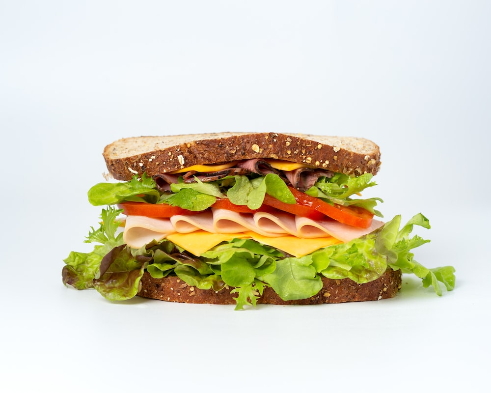

Turkey Avocado Delight

Description
The Turkey Avocado Delight is a satisfying and wholesome sandwich that combines the rich flavors of roasted turkey, creamy avocado, and zesty vegetables. With a delightful mix of textures and tastes, this sandwich is perfect for a quick lunch or a light dinner.
- 8 slices of whole-grain bread
- 1 pound (450g) roasted turkey breast, sliced
- 2 ripe avocados, peeled, pitted, and sliced
- 1 large tomato, thinly sliced
- 1 small red onion, thinly sliced
- 1 cup fresh baby spinach or lettuce leaves
- 4 slices of Swiss cheese or your preferred cheese (optional)
- Spread: Mix mayonnaise and Dijon mustard. Spread on bread slices.
- Layer: Place turkey slices on 4 slices of bread. Add cheese if desired.
- Build: Layer avocado, tomato, onion, and spinach on top.
- Dress and Serve: Whisk olive oil and balsamic vinegar. Drizzle over veggies. Top with remaining bread slices. Press briefly on a skillet. Cut, serve, and enjoy!